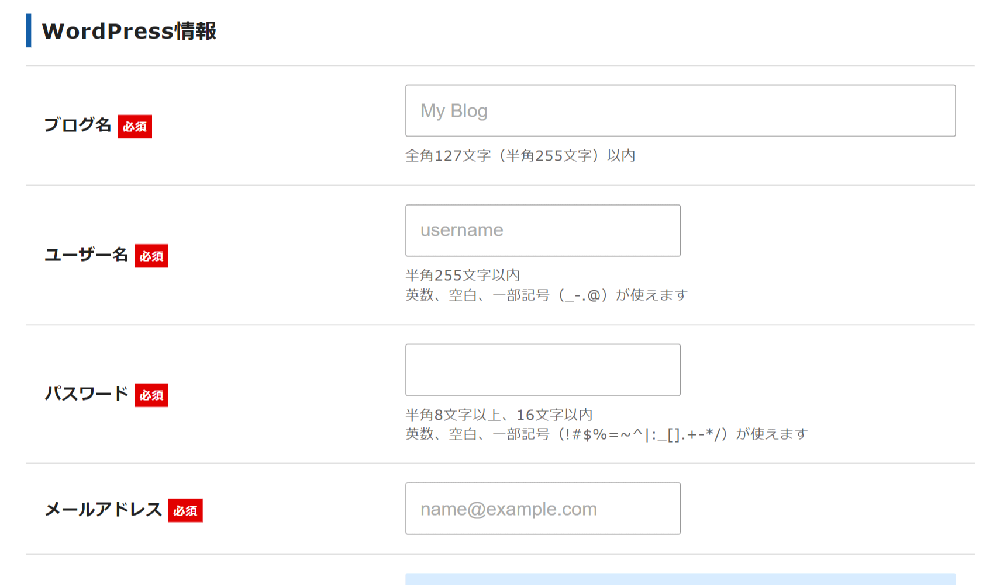
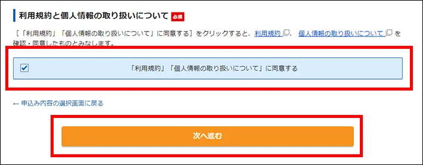

やる事リスト
- サーバー選定
- レンタルサーバーの契約
- ドメイン取得・設定
- wordpressスタートアップ
サーバー選定
今回使うのサーバーはxserverを使います。
①まずは↓のリンクをクリックしてください。
エックスサーバーを申し込む②赤枠の「お申し込み」をクリック

③ページが遷移したら、「10日間無料お試し、新規お申し込み」をクリック

④プランを選択する
サーバーIDはとくに変更の必要はありません。
プランは規模が大きくない限り「スタンダード」で十分です。
⑤wordpressクイックスタートの「利用する」にチェックする。
※重要必ずチェックをいれてください。
チェックを入れると、新しい画面が出るので「確認しました」をクリック
次にサーバーの契約期間を選択します。
長期間の契約ほど利用料金が安くなります。
⑥ドメイン名を入力する
ドメイン名は後から 変更できないので、ドメイン名は慎重に決めてください。
ドメインはどれを選択しても構いません。
ただし新規の方が見て不審がらないために、「.com」「.jp」をおススメします。こだわりが無い方は「.com」で問題ありません。
⑦wordpress情報を入力する
「ブログ名（ホームページ名）」「ユーザー名」「パスワード」「メールアドレス」を入力してください。
「ブログ名（ホームページ名）」は後から変更が可能です。
「ユーザー名」と「パスワード」は管理画面へのログイン時に必要なのでメモをしてください。
⑧テーマ選択

デザインテンプレートの「テーマ」を選択します。
後からの変更が出来るので「デフォルト」で問題ないでしょう。
テーマを選択したら、最後に「xserverアカウントの登録に進む」をクリックしてください。
⑨個人情報を入力する
本人の名前を入力してください。
⑩支払い情報を入力する
「クレジットカード」か「翌月後払い（コンビニ/銀行）」からお選びください。
⑪確認へ進む
利用規約と個人情報に関する情報を確認してチェックし、「次に進む」ボタンを押します。
⑫確認コードを入力する
登録したメールアドレス宛に確認コードが送られます。入力して「次に進む」をクリックしてください。
⑬登録情報を確認する
入力した情報に間違いがないかを確認して、「SMS・電話認証へ進む」をクリックしてください。
※重要これより先の操作を完了すると、料金に支払いが発生します。必ず間違いがないかご確認ください
⑭認証コードを取得する
SMSか電話のどちらかを選択して、「認証コードを取得する」ボタンをクリックしてください。
⑮認証コードを入力する
取得した認証コードを入力して、「認証して申し込みを完了する」をクリックしてください。
⑯完了画面
以上で登録完了です。
⑰設定完了のメール通知を受け取る
数分程度で「「xserver」重要 サーバーアカウント設定完了のお知らせ」メールが来ます。
メールにはwordpressのログインURLなどが記載されています。
登録完了後について
登録後の初期設定などはこちらで、設定しますので「ユーザー名」と「パスワード」をお聞きします。
※管理画面に入る為に使わせていただきます。
上記の２つを用意してお待ちください。